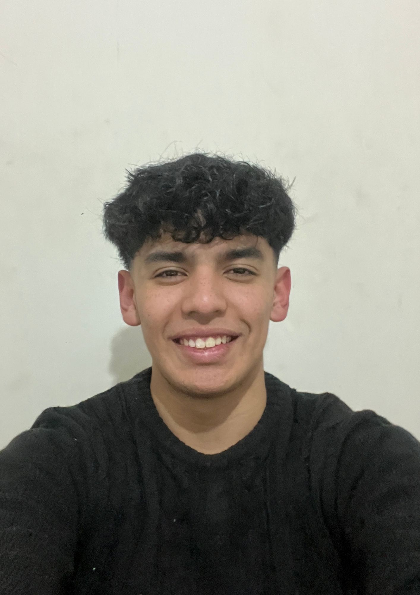

Laura Juncos — Clips para Redes Sociales
Edición de clips para redes sociales con subtítulos dinámicos, efectos de sonido y zooms para maximizar la retención y comunicar un mensaje de valor a la audiencia.
Seguí a la clienta: @laurajuncos.estudio
Hola, soy
Editor de Video | Motion Graphics | Contenido para Redes Sociales
Transformo ideas en contenido que capta la atención desde el primer segundo. Especializado en Reels, TikToks, Shorts y videos para YouTube.

Tengo 18 años y soy editor de video especializado en contenido para redes sociales. Mi trabajo se centra en transformar ideas en videos que capten la atención, mantengan la retención y comuniquen el mensaje de forma clara, ya sea para marcas, empresas o creadores de contenido.
Me interesa especialmente el storytelling, el ritmo de edición y el uso de herramientas de inteligencia artificial para optimizar flujos de trabajo y potenciar el resultado final. Siempre busco que cada edición tenga un propósito y genere impacto desde los primeros segundos.
Trabajo en todo el proceso de postproducción, desde la organización del material y la edición hasta el tratamiento de audio y los detalles finales. Prefiero comprender el objetivo de cada proyecto antes de empezar a editar, porque un buen video no depende solo de los efectos, sino de transmitir el mensaje correcto a la audiencia adecuada.
Herramientas que uso a diario para llevar cada video desde el material crudo hasta la entrega final.
Trabajos de edición para marcas, empresas y creadores de contenido. Esta sección se va a ir actualizando con cada nuevo proyecto.
Edición de clips para redes sociales con subtítulos dinámicos, efectos de sonido y zooms para maximizar la retención y comunicar un mensaje de valor a la audiencia.
Seguí a la clienta: @laurajuncos.estudio
Edición de un Reel enfocada en ritmo y retención, pensada para captar la atención desde el primer segundo.
Espacio reservado para el próximo trabajo de edición. Se va a actualizar con el video y los detalles del proyecto.
Cómo encaro cada proyecto de edición, del material crudo a la entrega final.
Antes de tocar la línea de tiempo, entiendo el objetivo del video: a quién le habla, en qué plataforma se va a publicar y qué mensaje tiene que quedar claro en los primeros segundos.
Organizo el material crudo, selecciono las mejores tomas y armo la estructura narrativa. El ritmo de edición, los cortes y los recursos visuales (subtítulos, zooms, efectos) se eligen en función de mantener la retención de principio a fin.
El audio se limpia y se mezcla con Adobe Podcast para que la voz suene clara sin importar la calidad de la grabación original. Uso herramientas de IA como Claude Code y ChatGPT para acelerar tareas repetitivas de organización, guiones e ideas.
Antes de la entrega, reviso el video completo para asegurarme de que cada corte tenga un propósito y de que el mensaje llegue de forma clara a la audiencia correcta.
¿Tenés un proyecto en mente o necesitás un editor para tu contenido? Estoy disponible para trabajar con marcas, empresas y creadores de contenido.